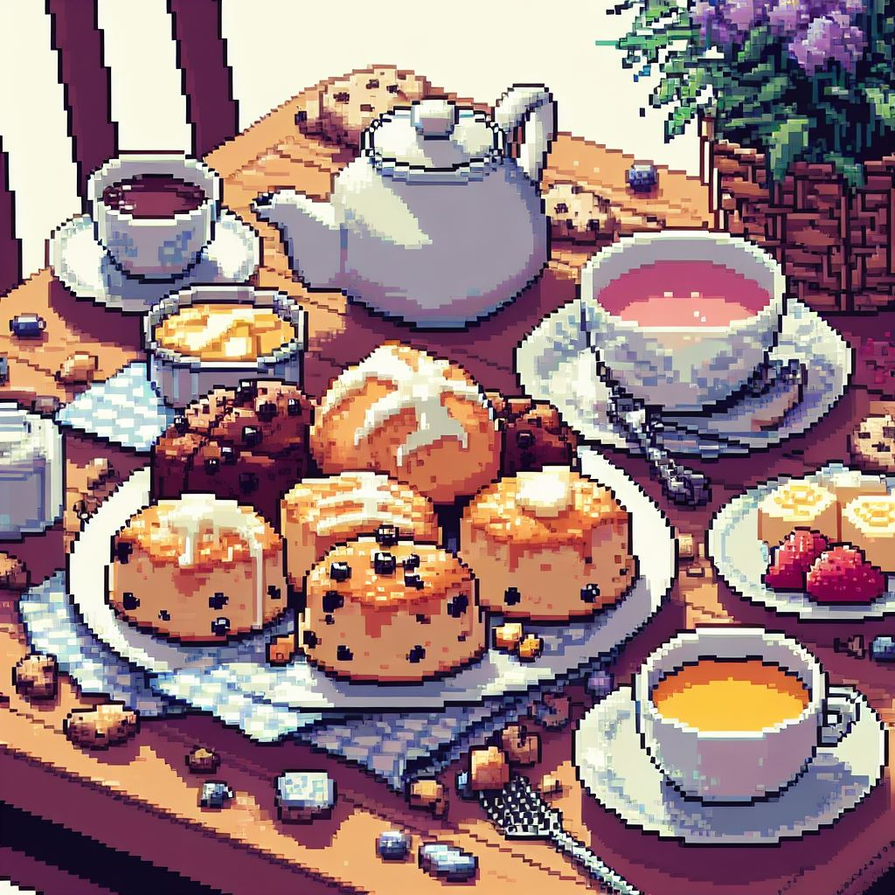
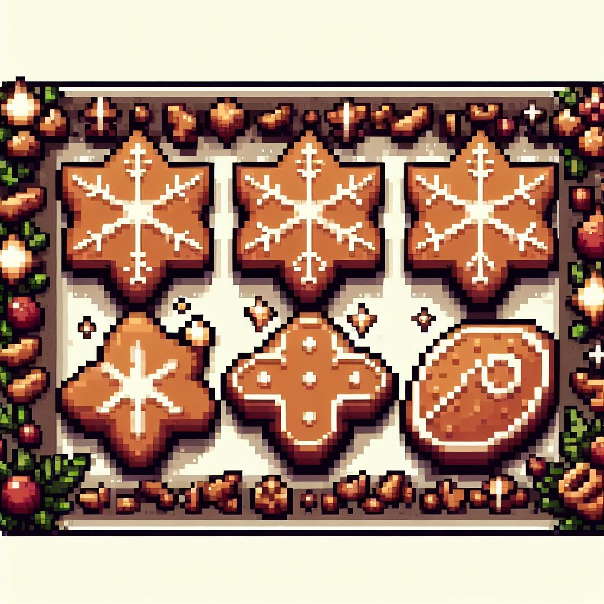
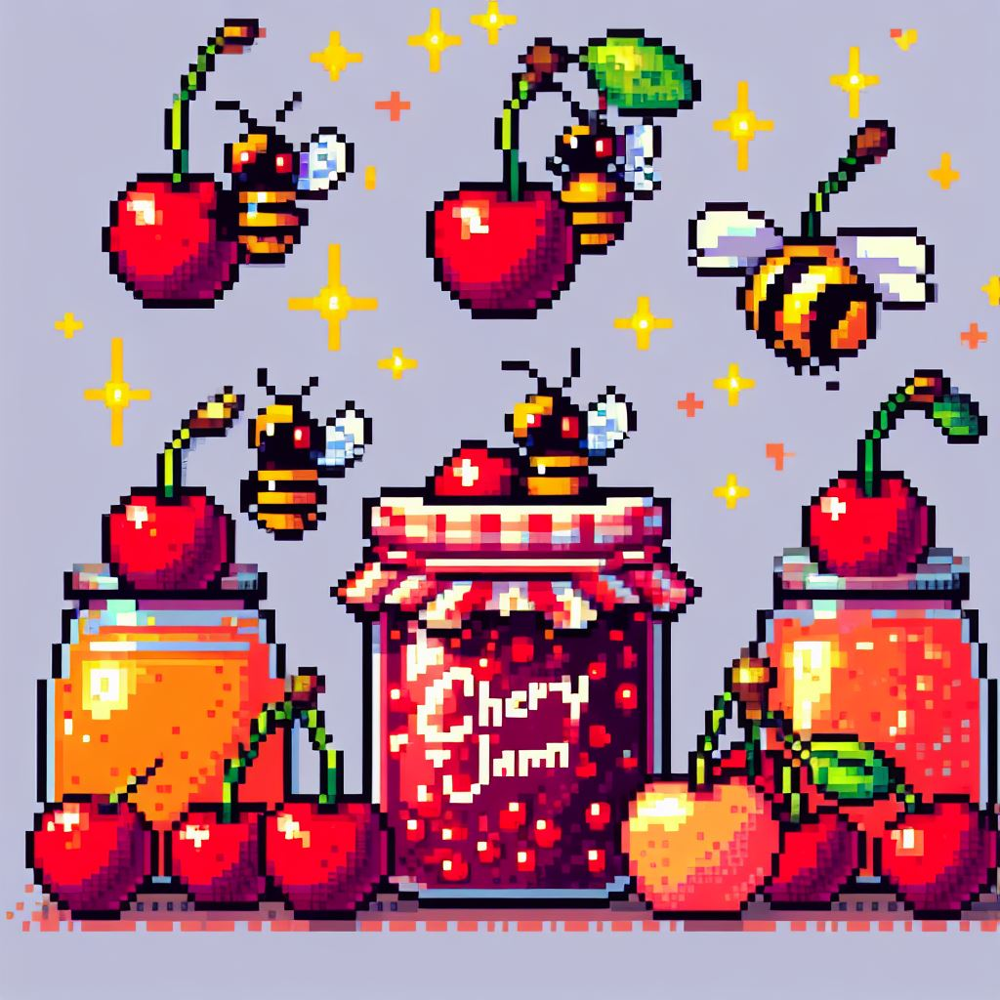
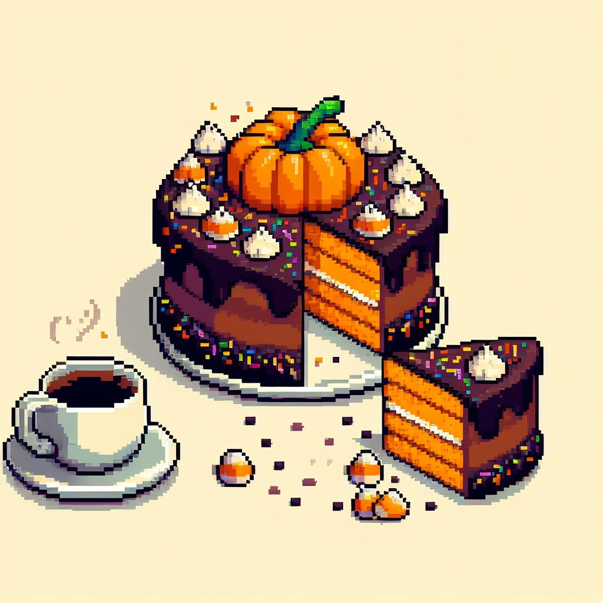
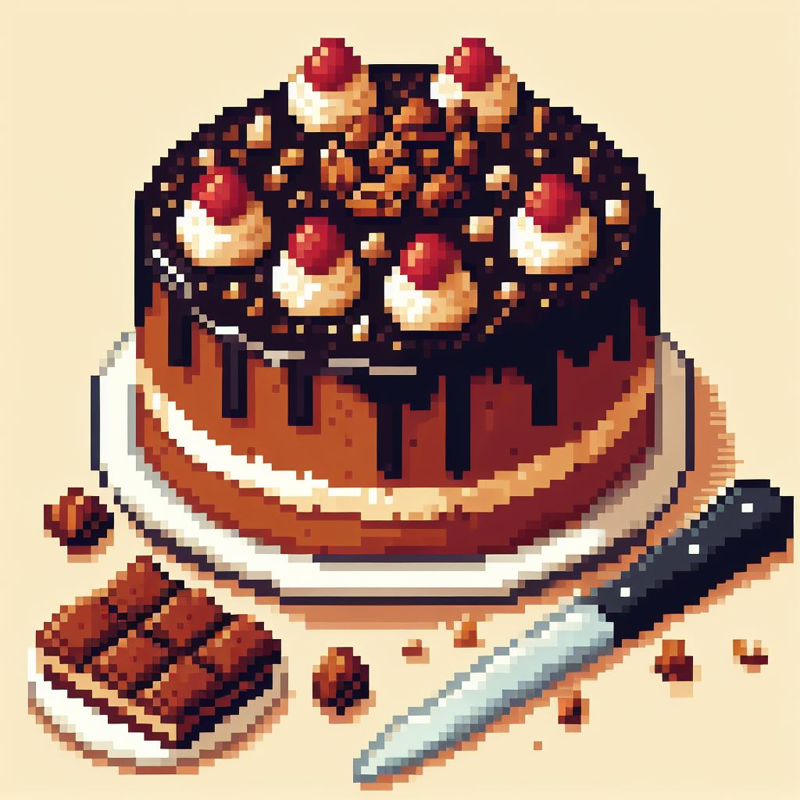
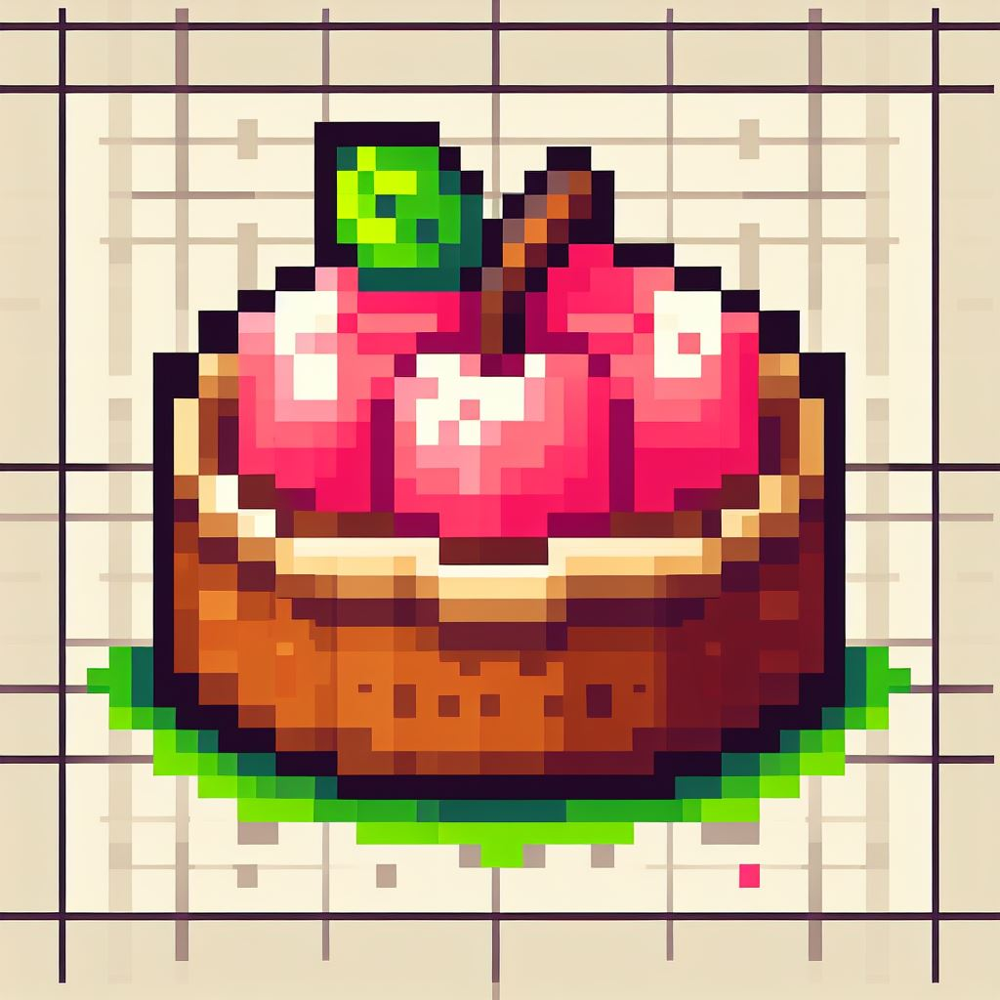

Medisterkaker

Gilde medisterfarse - bruk to ss form til kaker. Stek i godt smør.
Bruk smøret til å brune løk og mel.
Ha i kraft eller fond og et par ss seterrømme.
Mormors Lammefrikasé

- Lammekjøtt i biter
- Grønnsaker
- Hvitløk
- Maizena
Kok opp kjøttet, la det trekke i to timer. Tilsett grønnsaker og smak til med salt og pepper. Jevn med maizena.
Bankekjøtt

Skjær tynne skiver av oksekjøtt (3/4-1 cm), vend i mel, salt og pepper.
Stek i panne, tilsett fløte, melk og rømme. Smak til. Kok i 45-60 minutter. Server med ris eller poteter.
Fiskegrateng

- 1 dyp tallerken kokt fisk
- 100 g kokt makaroni
- 1 løk
- 2 ss smør
- 2 ss mel
- ca. 5 dl melk
- 2 egg
- Salt, pepper
Lag en tykk hvit saus. Ha fisk, kokt makaroni, og hakket løk i sausen.
Rør godt og tilsett eggeplommene. Smak til med krydder. Pisk hviten og vend inn.
Fyll blandingen i smurt ildfast form, strø knust kavring over.
Stek i varm ovn (230°C) i 30-40 minutter. Server med smeltet smør eller hvit saus og poteter.
Boller

Bland det tørre tilsett lunkekt melk og jevning. Elt i maskinen i 10 min tilsett smør i terningerog let i
10 min til. heve til dobbelstørrelse . Kna deigen smmen og elt ev inn rosiner
dl i 12 emner på stekebrett etterhev i ca 30 min pensle med egg stek 220 c midt i ovnen ca 12 min
Karamell pudding
- 125 g sukker (til karamell)
- 6 dl helmelk
- 60g sukker
- 1 ts vaniljesukker
- 3-4 egg
Brun farin til karamell, slå dette opp i en ildfast form, drei formen så karamellen dekker formen innvendig
la den stå til den er stiv og kald. kok fløtemelk, darin og vaniljesukker i 10 min. slå eggene sammen
visp ikke meget det vil gjøre puddingen pepet. avkjøl melken, blanf eggene i denne, sil blandiungen opp i den glaserte formen
alt må være kaldt eller vil glasuren trekke inn i puddinge. stek i vannbad ca 1 1/4 time vannet skal vøre på kokepunktet men aldrti fosskoke
når puddingen er stivnet er den ferdig. stå i formen til neste dag, hveklves karamels saus slåes over (formen kokes ut med litt vann)
Scones (12 stk)

- 5,5 dl hvetemel
- 3 ts bakepulver
- 2ts sukker
- 1/2 ts salt
- 100g kaldt smør
- 1 egg
- 1,5dl melk
bland det tørre (spar litt mel)
smuldre inn smøret, tilsett egg og melken. rør deigen sammen ikke for lenge. klapp deigen ut til ca 2cm
stikk ut rundingermed ett melkeglass
225 c - midterste rille ca 12-15 min
Sirupsnipper

- 1dl sirup (ca 150g)
- 15g sukker
- 150g smør
- 1dl kremfløte
- 1/2 ts nellik
- 1/2 ts ingefær
- 1/4 ts pepper
- 2ts kanel
- 1ts bakepulver
- 400g hvetemel
smnelt sirup, sukker og smør
over sbvak varme. rlr til sukkerkrystallene er borte, og avkjøl. rør inn kremfløte.
bland krydder, bakepulver og det meste av melet som siktes inn i blandingen rlr sammen deigen og dryss resten av melet over
sett den kjølig til neste dag. helst i kaldt rom eller kjeller. hvis dfeige nsettes i kjleskapet måden tas ut ett par timer før steking
elt deigen smidig kjevle den så it 3-4mm tykk. form kakene.
stek kakene på bakepapor midt i ovnen ves 175c i ca 10 min avhenging av tykkelsen store figurer eller flater bør prikkes med gaffel så de holder fasongen.
Berlinerkranser
- 1 hardkokt eggeplomme(10-15min)
- 1 rå eggeplomme
- 1/2 ss fløte
- 1/4 ts natron
- 65g sukker
- 125g smør
- ca 200g hvetemel
Den hardkokte eggeplommen gnis fin med den rå, tilsett så sukker og rør godt. Rør natron ut i fløten
og ha i. Deretter ha i det tørre vekselsvis med godt utvasket smør. Trill til pølser som formes
til kranser. Pensles med eggehvite og dyppes i grovt sukker.
Steketemp- 190°C
Steketid- 10-12 min
Ca 55 kaker
Mandeloveraskelser
Glasur
- ca 50g kokosfett
- + noen perler syltevoks 1ts
- 1 stor melkesjokolade 200g
Rå saft av bringebær eller blåbær
- 1kg bær, knuses (bruk potetmoser)
- 1l kaldt vann
- 5-10g vinsyre eller sitronsyre
bærene knuses, vinsyre og vann blandes og has i. La stå kaldt i 1 døgn. Siles (til neste døgn eller etter noen timer. stå kaldt. Ikke vri posen!)
Til hver liter saft - 500-600g farin
sukkeret has i og røres til det smelter.
Fryses
Kirsebærsyltetøy

3kg pitchede kirsebær kokes og ha i grønn Jam litt og litt. 1min etter Jam har kokt has 1,5kg sukker i. Has i glass som er 50°C, skru igjen rett etter du har helt over
Verdens beste
- 125g farin
- 125g smør
- 4 eggeplommer
- 3ss melk
- 125g hvetemel
- 2ts bakepulver
- 1ts vaniljepulver
- 4 eggehviter
- 200g farin (for marengs)
- 100g mandler

125g farin og 125g smør røres hvitt. 4 eggeplommer røres inn en av gangen, tilsett 3ss melk.
125g hvetemel blandes med 2ts bakepulver og 1ts vaniljepulver. Fordel deigen i langpanne.
4 eggehviter piskes stive. 200g farin blandes i når hvitene er stive. Dette has på deigen. 100g mandler skjæres opp og strøs over marengsen
-stekes i langpanne i 45min 150-165°C
Fyll: 1pk rom kakefyll+farin får et oppkok med 4 1/2 dl melk. Når dette er kaldt blandes det med 1/4l stivpisket fløte. Del kaken i to og ha fyllet imellom marengs nederst og øverst.
Kaken flyter utover og hever noe i stekeovnen
Stekes på rist i bunnen av ovnen
Gresskarkake

- 2 cups/310g mel
- 2 cups/400g sukker
- 2 ts bakepulver
- 2 ts natron
- 2 ts kanel
- 1/2 ts salt
- 4 egg
- 2 cups gresskar
- 1 cup olje
Glasur
- 100g smør
- 1 boks Philadelphia kremost
- 200-250g melis
170°C 35-40min
Firkløver Kake

6 egg
- 8dl sukker
- 2 bokser seterrømme
- 3dl vann
- 7-8dl hvetemel
- 4tp ss kakao
- 4tp ts bakepulver
- 2tp ts vaniljesukker
Pisk eggedosis, tilsett rømme og kaldt vann. Sikt i det tørre, brand godt. Helles i godt smurt langpanne (stor)
Stekes på nederste rille ved 200°C i ca 30-40min
Glasur
400g Firkløver, spe gjerne ut med melis/iskaffe/smeltet margarin. Stikk mange hull i kaken og hell glasuren over mens kaka er lunken
1/2 porsjon=rund form (ca 26cm i diameter)
Eplekake rund

- 200g hvetemel
- 2ts bakepulver
- 2ss farin
- 120g smør
- 2 eggeplommer
- 1ts vaniljesukker
Trykke ut bunnen, 5 epler høvlet, 2 eggehviter, 100g farin, litt av gangen, mandler på toppen. 200°C rist på bunnen, ca 30min , se etter 20min.
Chocolate brownie
- 280g smør
- 600g sukker-røres hvitt
- 5 egg
- 1 1/4 ts vaniljesukker
- 250g hvetemel
- 40g kakao
170°C i ca 30 min
passer til form 40x37cm